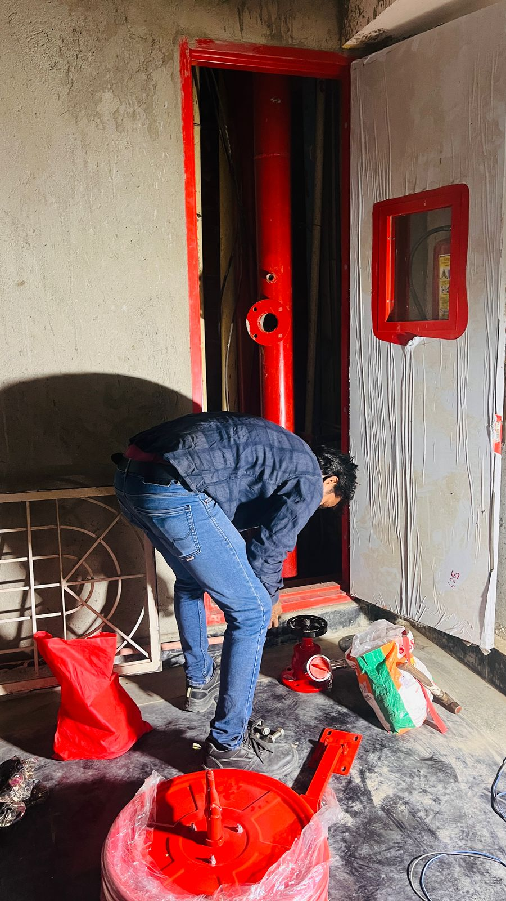
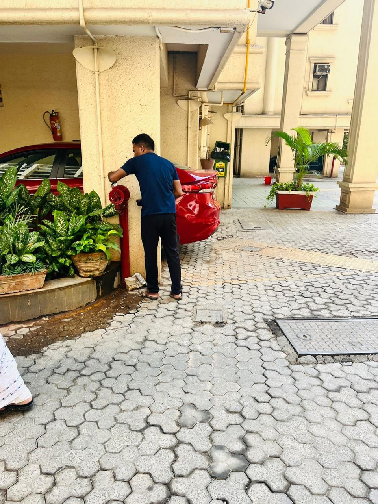

Definition: Fire fighting systems are pressurized water distribution networks consisting of reservoirs, booster pumps, piping, valves, and sprinkler heads designed to suppress fires. Samarth Fire Protection System installs, overhauls, and commissions these systems under a Class D government license in Malad, Goregaon, and the wider Mumbai Metropolitan Region.
System Integration Specifications
We install and overhaul high-capacity active suppression networks. Every system is built to survive high-pressure loads and operate automatically during power grid failures.
GOVT LICENSE CLASS D
Authorized by the Maharashtra Fire Service to install and sign Form A clearance certs for hydrants and sprinkler lines.
Field Installations by Samarth Technicians
Documentary records from active high-rise projects across Mumbai & Thane.

Heavy-gauge manifold assembly with dual non-return valves and pressure regulators.

Class C heavy mild steel pipeline welding and bracket anchoring in 22-storey shaft.

Flow and static pressure audit verification prior to Form B municipal submission.
Frequently Asked Questions
A wet riser system is a pressurized pipeline network filled constantly with water from an overhead or underground source, ready for instant use. A dry riser is an empty pipeline that fire crews pump water into using external fire engines during emergencies. High-rises above 30m in Mumbai typically require wet risers.
Booster pumps (electric, diesel, and jockey) should be run and tested weekly for pressure drop activation and battery charger health. Diesel engine starters require regular battery checks to ensure backup power cuts in during utility grid failures.
Yes, under the Maharashtra Fire Prevention and Life Safety Measures Act, sprinkler installations are mandatory for buildings exceeding specific height thresholds (generally 30 meters or higher) and in basements or parking levels to prevent structural smoke trapping.